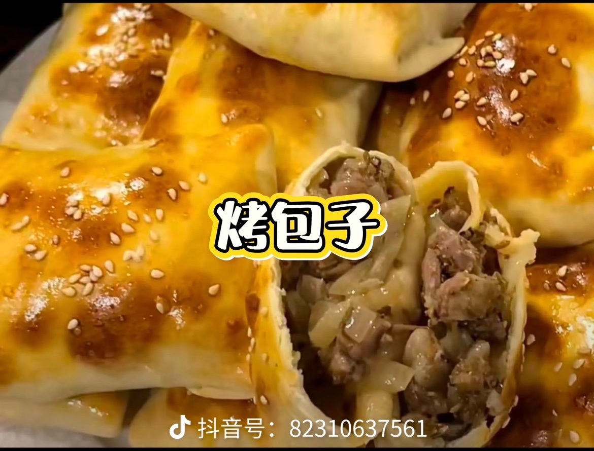
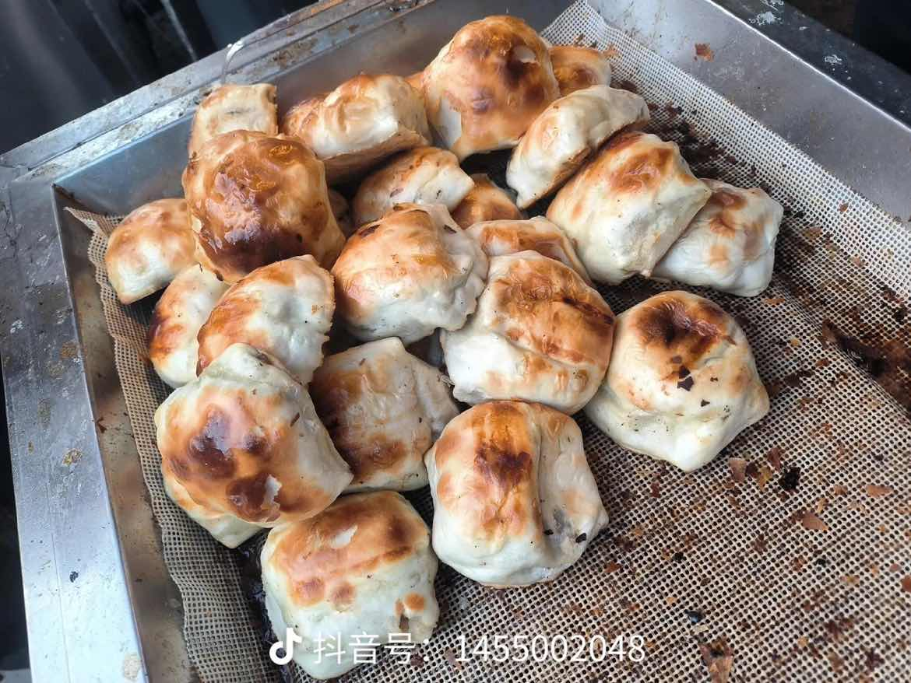
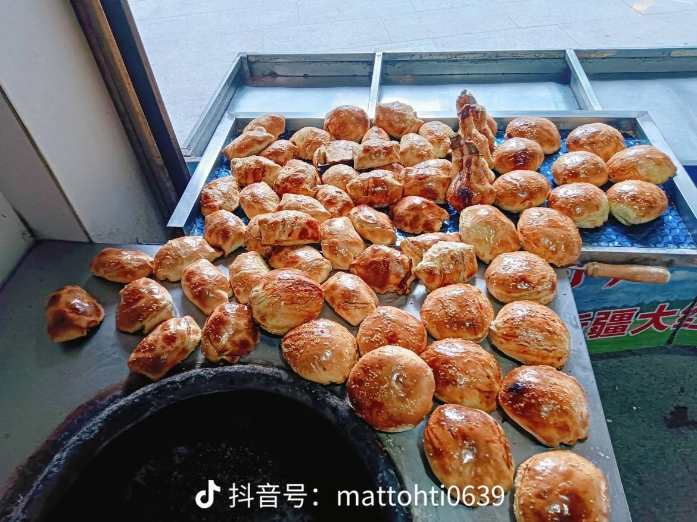
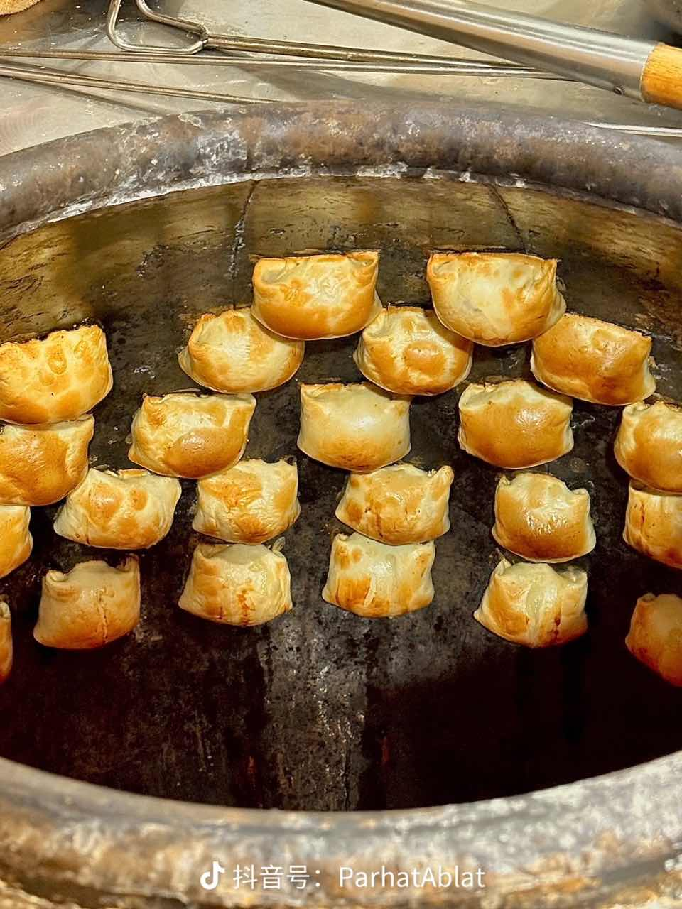
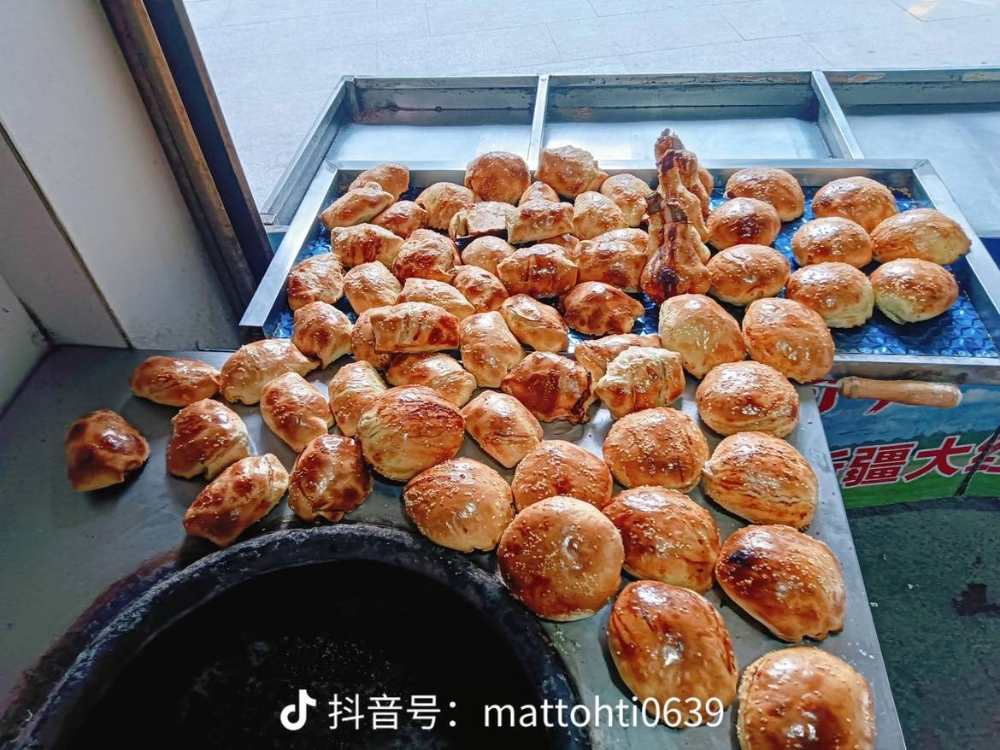
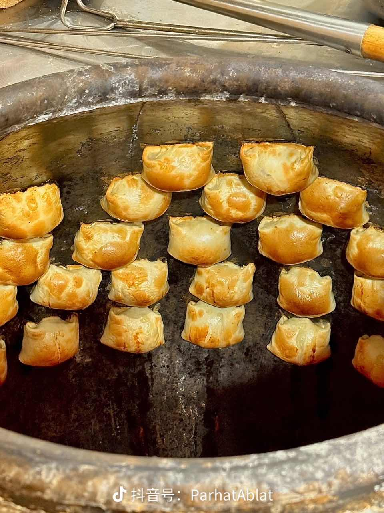
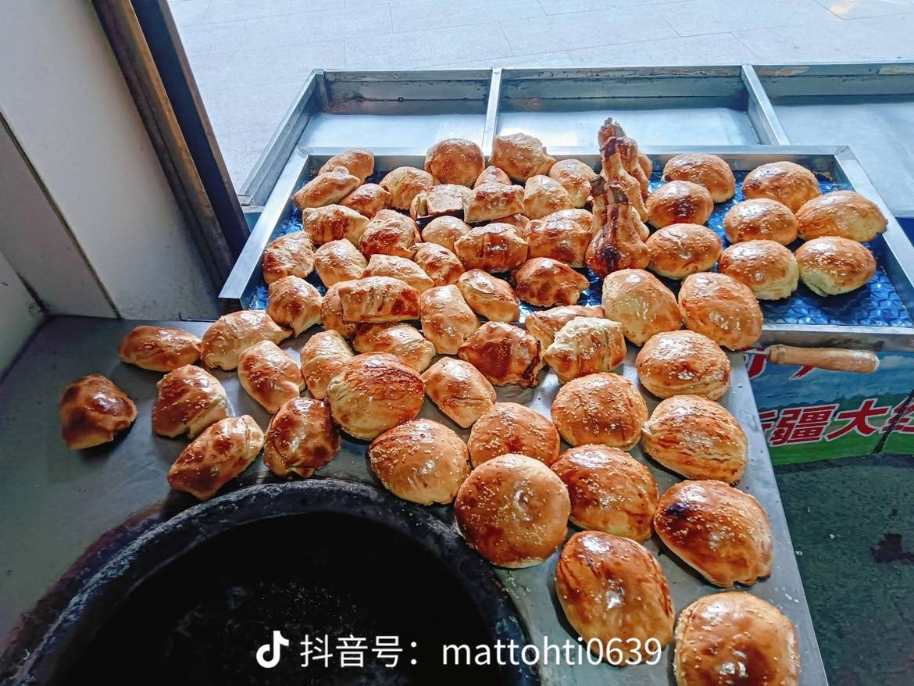
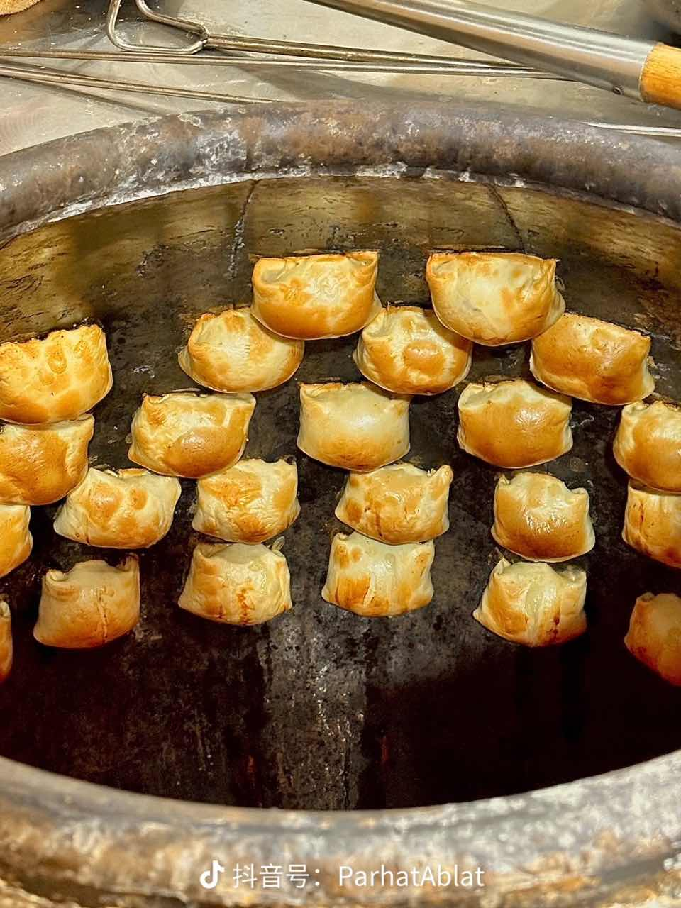

烤包子照片与特点
新疆街头巷尾的特色风味小吃


 





外皮金黄酥脆
烤包子的外皮由特制的面粉和清油制成，在馕坑里经过高温烘烤后，变得金黄酥脆，咬一口“咔嚓”作响，香气十足。
馅料鲜嫩多汁
烤包子的馅料主要以肥瘦相间的羊肉丁为主，辅以洋葱丁、孜然、胡椒粉等调料。经过烘烤，羊肉的油脂融入馅料，使得包子馅鲜嫩多汁，风味浓郁。
风味独特
烤包子是新疆少数民族喜爱的传统美食，它结合了烤、炸的烹饪工艺，将面食与肉食完美融合，既有面食的麦香，又有羊肉的鲜香，风味独特，让人回味无穷。
食用便捷
烤包子体积小巧，便于携带和食用，是新疆各族人民日常生活中非常方便的一种快餐食品，也是游客品尝新疆风味的首选小吃之一。
文化象征
烤包子不仅是一种美食，更是新疆饮食文化的缩影。它的制作和食用方式，体现了新疆各族人民热情、豪放的性格和对生活的热爱。